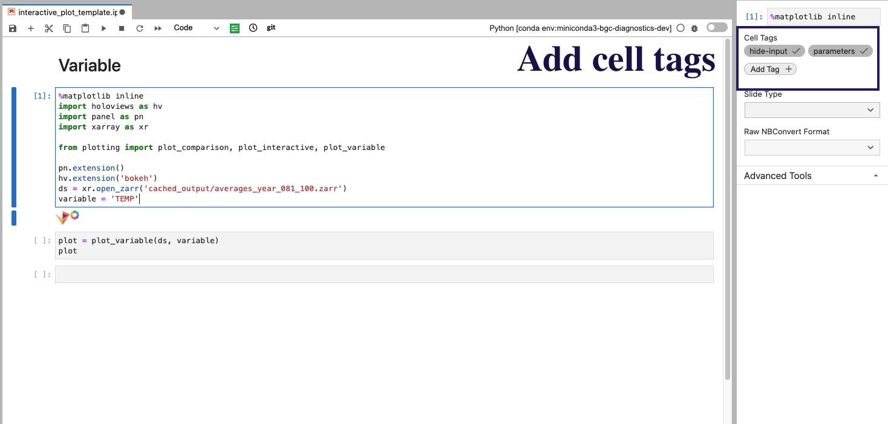
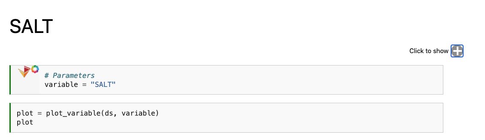
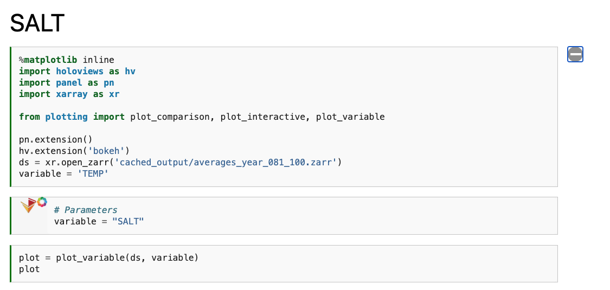

Reimagining Diagnostics Through the Use of the Jupyter Ecosystem#
Typically, diagnostics packages are written with following structure, using script-based workflows
Read files and do some preprocessing
Compute some average or derived quantity
Visualize the output
An example of this workflow is the Model Diagnostic Task Force (MDTF) package, which contains a collection of Process Oriented Diagnostics (PODs). Within the this workflow, files are pre-processed, then read into the various diagnostics using similar syntax.
These workflows are typically executed using a collection of scripts, with Jupyter Notebooks primarily being used as a tool for exploratory analysis. Here, we investigate what diagnostics package built using Jupyter Notebooks would look like.
Why Jupyter#
The Jupyter ecocystem (notebooks, hub, books, etc.) offers an alternative to traditional scripting and packages. In this example, investigate how using this interactive interface be used to write a parameterizable diagnostics package, capable of providing comparisons of CESM model output. The main reasons for using Jupyter include:
Provide a launch point for exploratory data analysis
Interactive plots
Ability to compile a website using JupyterBook
In this example, we will walk through how we built a diagnostics package (CESM2 MARBL Diagnostics) prototype using a Jupyter focused workflow.

Setting up an Analysis Configuration File#
A basic requirement of a diagnostics package is that it be configurable to different cases, allowing the user to specify which files to use, which diagnostics to plot, and where to place the output. An example of the configuration file used for this example is given below:
reference_case_name: b1850.f19_g17.validation_mct.004
compare_case_name:
- b1850.f19_g17.validation_mct.002
- b1850.f19_g17.validation_nuopc.004
case_data_paths:
- /glade/scratch/hannay/archive/b1850.f19_g17.validation_mct.004/ocn/hist
- /glade/scratch/hannay/archive/b1850.f19_g17.validation_mct.002/ocn/hist
- /glade/scratch/hannay/archive/b1850.f19_g17.validation_nuopc.004_copy2/ocn/hist
cesm_file_format:
- hist
catalog_csv: ../data/cesm-validation-catalog.csv
catalog_json: ../data/cesm-validation-catalog.json
variables:
physics:
- TEMP
- SALT
- HMXL
- BSF
- IFRAC
- SHF
- SFWF
- SHF_QSW
biogeochemistry:
- FG_CO2
- PO4
- photoC_TOT_zint
- photoC_sp_zint
- photoC_diat_zint
- photoC_diaz_zint
- POC_FLUX_100m
- diaz_Nfix
- SiO2_PROD
- CaCO3_FLUX_100m
- SiO2_FLUX_100m
- ALK
- DIC
- O2
- DOC
- DOCr
- NH4
- NO3
- SiO3
Setting up the “Preprocessing” Notebooks#
The first two bullet points from the “traditional diagnostics” workflow can be accomplished using two primary notebooks, one for creating a data catalog (00_Build_Catalog.ipynb), the other accessing data from that catalog and applying a computation (01_Compute_20yr_mean.ipynb). A third notebook plots a visualization of the data catalog used in the analysis (intro.ipynb)
If you are interested in how we built the data catalog, I encourage you check out the “Building Intake-ESM Catalogs from History Files” blog post.
If you are interested in how we computed the average over some time period using Dask, Xarray, and Intake-ESM, I encourage you check out our “Examining Diagnostics Using Intake-ESM and hvPlot” blog post.
If you are interested in how we built the catalog visualization, I encourage you to check out the “Creating Model Documentation Using Jupyterbook and Intake-ESM” blog post.
Using our Configuration File in the Notebooks#
At the top of every notebook, we call
from config import analysis_config
which access the analysis_config variable from the config.py script:
import yaml
with open("analysis_config.yml", mode="r") as fptr:
analysis_config = yaml.safe_load(fptr)
analysis_config['all_variables'] = analysis_config['variables']['physics'] + analysis_config['variables']['biogeochemistry']
analysis_config['all_cases'] = [analysis_config['reference_case_name']] + analysis_config['compare_case_name']
This allows us to access a dictionary with the configuration set in our analysis_config.yml file.
How to Parameterize Notebooks#
An important requirement for a diagnostic package is that it be “parameterizable” such that a user can input a list of variables, and the package is able to “inject” those variables into the analysis. Here, we demonstrate a bare-minimum example of how this might work, specifying a list of variables in the analysis_config.yaml file:
variables:
physics:
- TEMP
- SALT
- HMXL
- BSF
- IFRAC
- SHF
- SFWF
- SHF_QSW
biogeochemistry:
- FG_CO2
- PO4
- photoC_TOT_zint
- photoC_sp_zint
- photoC_diat_zint
- photoC_diaz_zint
- POC_FLUX_100m
- diaz_Nfix
- SiO2_PROD
- CaCO3_FLUX_100m
- SiO2_FLUX_100m
- ALK
- DIC
- O2
- DOC
- DOCr
- NH4
- NO3
- SiO3
These variables can then be “substituted” into notebooks using papermill or nbformat.
Make sure you install papermill before adding these tags!
conda install -c conda-forge papermill
Parameterizing Code Cells#
We use papermill here to substitute variables within code blocks. You add a cell with the desired variable name (ex. variable), then add a cell tag parameters. An image of what this looks like the Jupyter Lab interface is shown below:

In addition to the parameters tag, we add hide-input which will “hide” the cell on a JupyterBook page, with the code still visible via expanding the cell.
The code block then executed to generate the resultant notebooks is provided below (where the screenshot above is the interactive_plot_template.ipnyb notebook:
import papermill as pm
from config import analysis_config
for variable_type in analysis_config['variables']:
for variable in analysis_config['variables'][variable_type]:
out_notebook_name = f"{variable_type}_{variable}.ipynb"
pm.execute_notebook(
"interactive_plot_template.ipynb",
out_notebook_name,
parameters=dict(variable=variable),
kernel_name='python3',
)
An example of that is shown below, with the resultant physics_SALT.ipynb notebook:

We only see the output from papermill, and the plotting cell. If we expand the “Click to Show” section, we can see the original input.

Taking a Look at the Interactive Plots#
Below these first few cells are interactive plots with the specified variables. An example of the SALT diagnostics are shown below (if you are interested in generating similar plots, be sure to check out the “Examining Diagnostics Using Intake-ESM and hvPlot” blog post.
{kind=link}
Parameterizing Markdown Cells#
You’ll notice that the title of the first notebook is Variable, while the output notebooks have their respective variable titles. This is accomplished using nbformat, with the code block motivated by a thread on the Jupyter Discourse. A function to go through and substitute some variable name is given below:
import nbformat as nbf
from config import analysis_config
def modify_markdown_header(notebook_name, variable):
notebook = nbf.read(notebook_name, nbf.NO_CONVERT)
cells_to_keep = []
for cell in notebook.cells:
if cell.cell_type == 'markdown':
cell['source'] = cell['source'].replace('Variable', variable)
cells_to_keep.append(cell)
new_notebook = notebook
new_notebook.cells = cells_to_keep
nbf.write(new_notebook, notebook_name, version=nbf.NO_CONVERT)
return print(f'Modified {notebook_name} with {variable} header')
We can then add this function after creating the notebooks in papermill, with the workflow shown below:
for variable_type in analysis_config['variables']:
for variable in analysis_config['variables'][variable_type]:
out_notebook_name = f"{variable_type}_{variable}.ipynb"
pm.execute_notebook(
"interactive_plot_template.ipynb",
out_notebook_name,
parameters=dict(variable=variable),
kernel_name='python3',
)
modify_markdown_header(out_notebook_name, variable)
Setting up our Jupyter Book Table of Contents#
When setting up a Jupyter Book, the two required configuration files are:
_config.yml_toc.yml
If you are interested in building a Jupyter Book, I encourage you to check out their documentation.
For our table of contents file (_toc.yml), we use the following:
format: jb-book
root: intro
parts:
- caption: Build Catalog and Compute
chapters:
- file: 00_Build_Catalog
- file: 01_Compute_20yr_mean
- caption: Physics Plots
chapters:
- glob: physics_*
- caption: Biogeochemistry Plots
chapters:
- glob: biogeochemistry_*
Notice how we can use glob instead of file for the plotting notebooks to include any notebooks that start with either physics or biogeochemistry, placing these in their respective sections in the table of contents.
Automating the Book Build using Github Actions#
The Jupyter Book in this project is built automatically using Github Actions, with the web page rendered through Github Pages. The file used for this process (deploy.yml) is provided below, with the build triggered by pushes to the main branch:
Make sure that this file is saved in the {repo_root_directory}.github/workflows/ directory!
name: deploy
on:
# Trigger the workflow on push to main branch
push:
branches:
- main
# This job installs dependencies, build the book, and pushes it to `gh-pages`
jobs:
build-and-deploy-book:
runs-on: ${{ matrix.os }}
strategy:
matrix:
os: [ubuntu-latest]
python-version: [3.8]
steps:
- uses: actions/checkout@v2
# Install dependencies
- name: Set up Python ${{ matrix.python-version }}
uses: actions/setup-python@v1
with:
python-version: ${{ matrix.python-version }}
- name: Install dependencies
run: |
pip install -r requirements.txt
# Build the book
- name: Build the book
run: |
jupyter-book build notebooks
# Deploy the book's HTML to gh-pages branch
- name: GitHub Pages action
uses: peaceiris/actions-gh-pages@v3.6.1
with:
github_token: ${{ secrets.GITHUB_TOKEN }}
publish_dir: notebooks/_build/html
Conclusions#
In this example, we covered how the Jupyter ecoysystem provides the tools neccessary to build a diagnostics package. The combination of Jupyter Notebooks, Jupyter Book, and various open source packages made to modify these notebooks offer an alternative diagnostic workflow. Not only does this offer the ability to synthesize curiosity-driven analysis, but it also provides a means of automatically generating an interactive website to share with collaborators. The outputs from this workflow include:
Interactive notebooks
A data catalog
An interactive webpage which can be shared with others
More effort should go into exploring how to better parameterize these calculations and data visualizations, in addition to how one would curate a collection of diagnostic Jupyter Books.